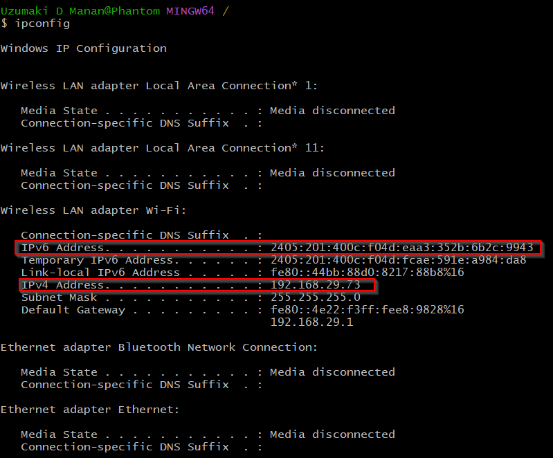

- IP Addresses [3rd Layer]
- 
- IPv4 is combn of 4 8bit binary(0s and 1s). Total Size is 32 bits
- Range for ipv4 is till 2^32 = 4,294,967,296. This is a low no compared to today's population. So Ips will start replicating if we keep on using this format.
- IPv6 are 16 bits 8 part long => 128bits. Its around 3.4e38 which is very huge.
- IPv6 still lack popularity of IPv4 and are rarely talked about.
- How are IPv4s still used? There is something called NAT(Network Address Translation).
- Say we are using a router and 20 devices are connected to this router. These 20 devices will have same ip address and NAT will manage this. [More about this later]
- Generally IP Addresses start with 196.168. These are Private IPs[Common Households and Business].These Private IPs can be passed out to public IPs.
- All these private IPs connect to a Single Public IP address of our Router.